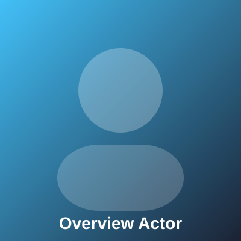

Overview
Explore the cube topics
Select a face on the right to load its dedicated content template here.
- Each face has its own title, bullet list, and two images
- User Management covers strategy, ambition, and long-range goals
- Core Facility Applications introduces the product vision and core promise
- Service Management grounds the story in foundations and operations
- Billing captures context, constraints, and supporting detail
- Reporting focuses on growth, momentum, and next actions
- Inventory covers stock, assets, and availability
- Click background space anytime to return to this overview